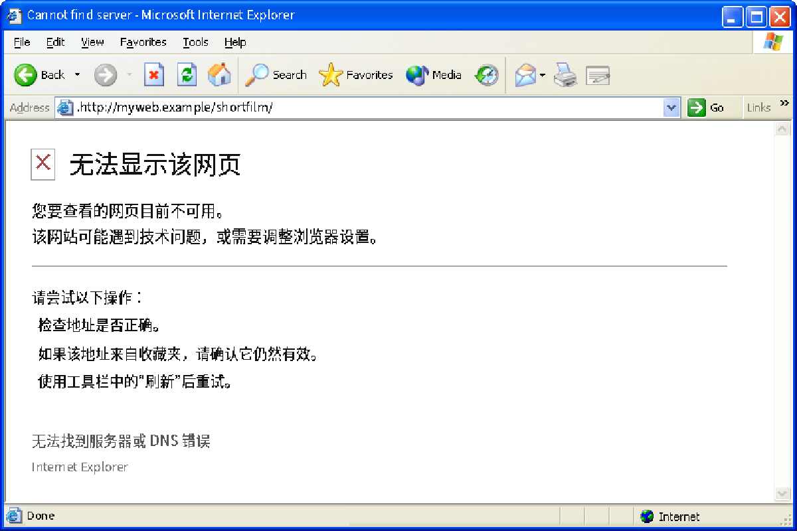
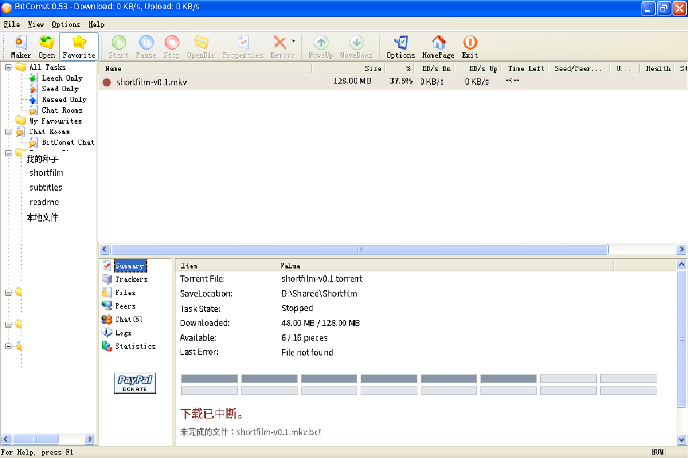
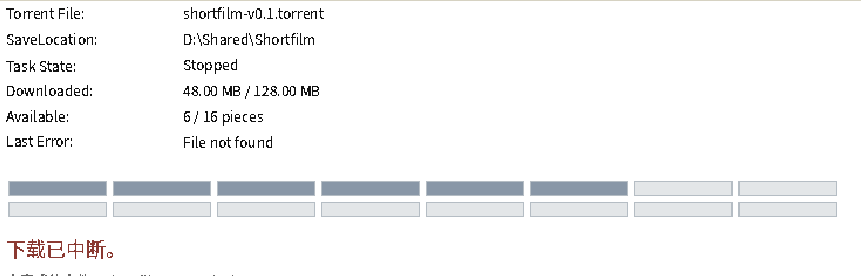

来源说明仅在此页和metadata，不烧入演出图。新增状态均为原创复原。
Chinese failure body is authored; native English XP/IE6 toolbar is a real source screenshot. No actual request was made.

Only native shell controls and real column geometry are reused. New task, progress and error text are a generic authored failure, not an actual BitComet network transfer.


The page title and file belong to this film’s authored example, not a historical website. Missing-image boxes are browser content states, not decorative buttons.
Same authored document title/file as the cached page and stalled transfer. Whitespace is intentional. This is not a claim that any named real service disappeared.